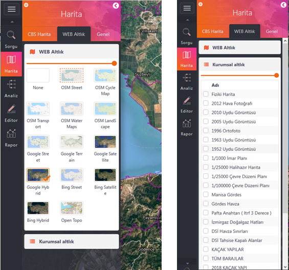

Altlık Haritalar Sekmesinde Web Altlık ve Kurumsal Altlıklar olmak üzere iki ayrı kategori bulunmaktadır.
Web Altlık Haritaları Open Street Map, Google Map, Bing Maps vb. web tabanlı harita servislerini ihtiva etmektedir. Bu bölmede işaretlenen altlık anında harita kanvasında görüntülenmekte ve üzerine "OK" işareti konulmaktadır.
Aynı kısımda etrafı kesikli çizgi ile çevrili harita ise görsel analizlerde sıkça kullanılan 2. Altlık Haritayı göstermektedir. 2. Altlık haritayı farklı bir harita olarak değiştirilmesi için "Genel" sekmesinde ağaç görünüm üzerinde web altlık haritalar üzerinde sağ klik yapılması gerekmektedir.
Seçili herbir harita için yukarı kısımda bulunan Şeffaflık çubuğu ile harita şeffaflığı ayarlanabilir.

Kurumsal Altlık Haritalar, kurumların yayınladıkları kendilerine ait haritalardır. Bu haritalar liste şeklinde görüntülenmekte olup birden fazla işaretleme yapılarak çok sayıda harita üst üste/birlikte görüntülenebilmektedir.